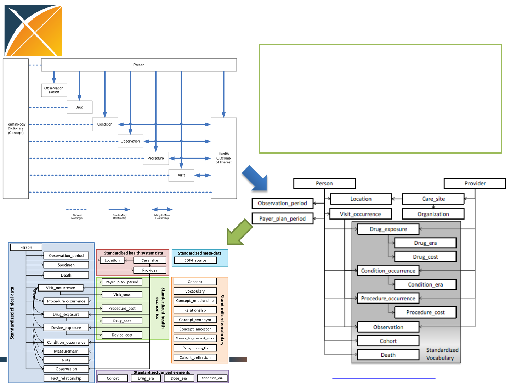
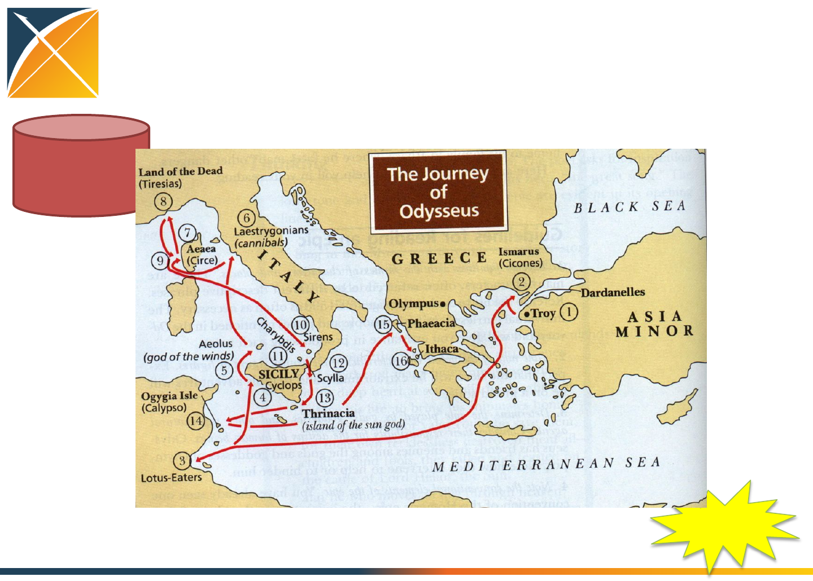
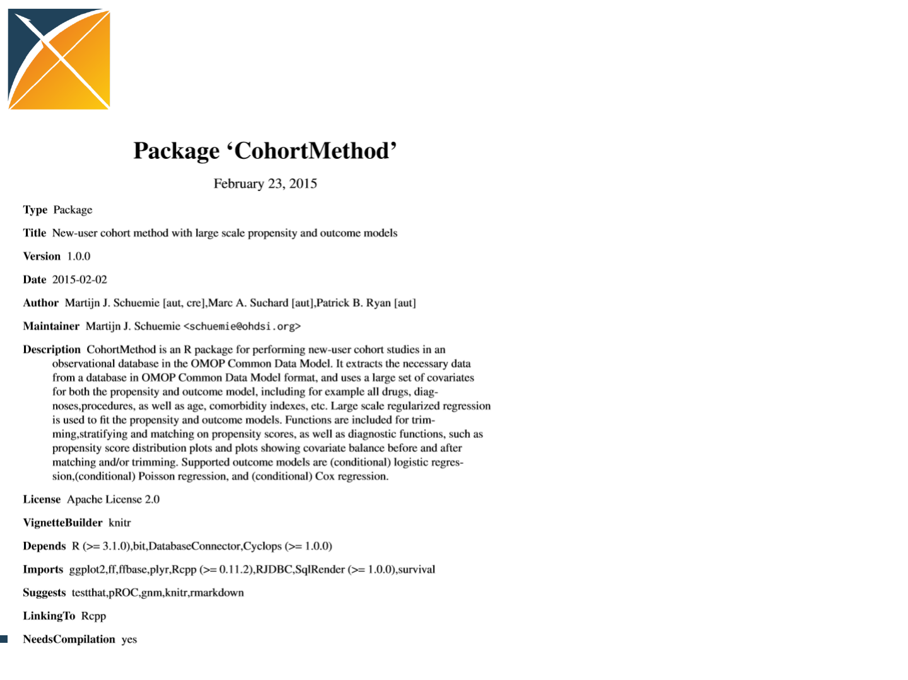

Open-Source Big Data
Analytics in Healthcare
Jon Duke, George Hripcsak, Patrick Ryan
www.ohdsi.org/medinfo-2015-tutorial

Introduction
Introducing OHDSI
•The Observational Health Data Sciences and
Informatics (OHDSI) program is a multi-
stakeholder, interdisciplinary collaborative to
create open-source solutions that bring out
the value of observational health data through
large-scale analytics
•OHDSI has established an international
network of researchers and observational
health databases with a central coordinating
center housed at Columbia University
http://ohdsi.org
Why large-scale analysis is needed in
healthcare
All drugs
All health outcomes of interest

OHDSI: a global community
OHDSI Collaborators:
•>100 researchers in academia,
industry and government
•>10 countries
OHDSI Data Network:
•>40 databases standardized to
OMOP common data model
•>500 million patients
Global reach of ohdsi.org
•>10,000 distinct viewers from 110 countries in 2015

OHDSI’s guiding principles
•Evidence-based: OHDSI’s scientific research and development will be
driven by objective, empirical evidence to ensure accuracy and reliability
in everything we do
•Practical: OHDSI will go beyond methodological research, developing
applied solutions and generating clinical evidence
•Comprehensive: OHDSI aims to generate reliable scientific evidence for
all interventions and all outcomes
•Transparent: All work products within OHDSI will be open source and
publicly available, including source code, analysis results, and other
evidence generated in all our activities. Best practices for large-scale open
source collaboration will guide development activities
•Inclusive: OHDSI encourages active participation from all stakeholders –
patients, providers, payers, government, industry, academia – in all phases
of research and development
•Secure: OHDSI will protect patient privacy and respect data holder
interests at all times in our work

http://OHDSI.org
•To achieve the principle of inclusivity, OHDSI is
an open collaborative. Anyone who can give
time, data, or funding is welcome, and
participation in the operation of OHDSI is
expected.

Evidence OHDSI seeks to generate from
observational data
•Clinical characterization:
–Natural history: Who are the patients who have diabetes?
Among those patients, who takes metformin?
–Quality improvement: what proportion of patients with
diabetes experience disease-related complications?
•Population-level estimation
–Safety surveillance: Does metformin cause lactic acidosis?
–Comparative effectiveness: Does metformin cause lactic
acidosis more than glyburide?
•Patient-level prediction
–Precision medicine: Given everything you know about me and
my medical history, if I start taking metformin, what is the
chance that I am going to have lactic acidosis in the next year?
–Disease interception: Given everything you know about me,
what is the chance I will develop diabetes?
Methodological research
Open-source
analytics
development
Clinical applications
Observational
data management
Population-level
estimation
Patient-level
prediction
•Data quality assessment
•Common Data Model evaluation
•ATHENA for standardized
vocabularies
•WhiteRabbit for CDM ETL
•Usagi for vocabulary mapping
•HERMES for vocabulary exploration
•ACHILLES for database profiling
•CohortMethod
•SelfControlledCaseSeries
•SelfControlledCohort
•TemporalPatternDiscovery
•PatientLevelPrediction
•APHRODITE for predictive
phenotyping
•Empirical calibration
•LAERTES for evidence synthesis
•PENELOPE for patient-centered
product labeling
•Chronic disease therapy pathways
•HOMER for causality assessment
Clinical
characterization
•CIRCE for cohort definition
•CALYPSO for feasibility assessment
•HERACLES for cohort
characterization
•Phenotype evaluation
•Evaluation framework and
benchmarking
OHDSI ongoing collaborative activities

Open Science through Standardization
•The OHDSI community has standardized core
components of the research process in order to
–Promote transparent, reproducible science
–Reveal data quality issues
–‘Calibrate’ datasets
–Bring skillsets together from across the community
(clinical, epi, stats, compSci)
Opportunities for standardization in the
evidence generation process
•Data structure : tables, fields, data types
•Data content : vocabulary to codify clinical domains
•Data semantics : conventions about meaning
•Cohort definition : algorithms for identifying the set of
patients who meet a collection of criteria for a given
interval of time
•Covariate construction : logic to define variables
available for use in statistical analysis
•Analysis : collection of decisions and procedures
required to produce aggregate summary statistics from
patient-level data
•Results reporting : series of aggregate summary
statistics presented in tabular and graphical form
Protocol
How OHDSI Works
Source data
warehouse, with
identifiable
patient-level data
Standardized, de-
identified patient-
level database
(OMOP CDM v5)
ETL
Summary
statistics results
repository
OHDSI.org
Consistency
Temporality
Strength Plausibility
Experim ent
Coherence
Biological gradient Specificity
Analogy
Comparative
effectiveness
Predictive modeling
OHDSI Data Partners
OHDSI Coordinating Center
Standardized
large-scale
analytics
Analysis
results
Analytics
development
and testing
Research and
education
Data
network
support

Objectives in OMOP Common Data
Model development
•One model to accommodate both administrative claims and
electronic health records
–Claims from private and public payers, and captured at point-of-care
–EHRs from both inpatient and outpatient settings
–Also used to support registries and longitudinal surveys
•One model to support collaborative research across data
sources both within and outside of US
•One model that can be manageable for data owners and
useful for data users (efficient to put data IN and get data
OUT)
•Enable standardization of structure, content, and analytics
focused on specific use cases

Page 16
Evolution of the OMOP Common data model
http://omop.org/CDM
OMOP CDMv2
OMOP CDMv4
OMOP CDMv5
OMOP CDM now Version 5, following
multiple iterations of implementation,
testing, modifications, and expansion
based on the experiences of the OMOP
community who bring on a growing
landscape of research use cases.
Concept
Concept_relationship
Concept_ancestor
Vocabulary
Source_to_concept_map
Relationship
Concept_synonym
Drug_strength
Cohort_definition
Standardized vocabularies
Attribute_definition
Domain
Concept_class
Cohort
Dose_era
Condition_era
Drug_era
Cohort_attribute
Standardized
derived elements
Standardized clinical data
Drug_exposure
Condition_occurrence
Procedure_occurrence
Visit_occurrence
Measurement
Procedure_cost
Drug_cost
Observation_period
Payer_plan_period
Provider
Care_site Location
Death
Visit_cost
Device_exposure
Device_cost
Observation
Note
Standardized health system data
Fact_relationship
Specimen
CDM_source
Standardized meta-data
Standardized health
economics
Drug safety surveillance
Device safety surveillance
Vaccine safety surveillance
Comparative effectiveness
Health economics
Quality of care Clinical research
One model, multiple use cases
Person
Standardized Vocabularies: Conditions
Existing
De Novo
Mapping
Derived
SNOMED-CT
Source codes
ICD-10-CM
Low-level concepts
(Level 1)
Higher-level
classifications (Level
2 and up)
Oxmis Read
SNOMED-CT
ICD-9-CM
Top-level
classification SNOMED-CT MedDRA
MedDRA
MedDRA
Low-level terms
(Level 1)
Preferred terms
(Level 2)
High-level terms
(Level 3)
MedDRA High-level group
terms (Level 4)
MedDRA System organ class
(Level 5)
SMQ
SMQ
SMQ
SMQ
Cohort
SNOMED
Standard vocabulary
Classifications
Source codes
Querying
Coding

Preparing your data for analysis
Patient-level
data in source
system/ schema
Patient-level
data in
OMOP CDM
ETL
design
ETL
implement ETL test
WhiteRabbit:
profile your
source data
RabbitInAHat:
map your source
structure to
CDM tables and
fields
ATHENA:
standardized
vocabularies
for all CDM
domains
ACHILLES:
profile your
CDM data;
review data
quality
assessment;
explore
population-
level summaries
OHDSI tools built to help
CDM:
DDL, index,
constraints for
Oracle, SQL
Server,
PostgresQL;
Vocabulary tables
with loading
scripts
http://github.com/OHDSI
OHDSI Forums:
Public discussions for OMOP CDM Implementers/developers
Usagi:
map your
source codes
to CDM
vocabulary

The odyssey to evidence generation
Patient-level
data in source
system/ schema
evidence
Single study
Real-time query
Large-scale analytics
Data Evidence sharing paradigms
Patient-level
data in
OMOP CDM
evidence
Write
Protocol
Develop
code
Execute
analysis
Compile
result
Develop
app
Design
query
Submit
job
Review
result
Develop
app
Execute
script
Explore
results
One-time Repeated
Standardized large-scale analytics tools
under development within OHDSI
Patient-level
data in
OMOP CDM
http://github.com/OHDSI
ACHILLES:
Database
profiling
CIRCE:
Cohort
definition
HERACLES:
Cohort
characterization
OHDSI Methods Library:
CYCLOPS
CohortMethod
SelfControlledCaseSeries
SelfControlledCohort
TemporalPatternDiscovery
Empirical Calibration
HERMES:
Vocabulary
exploration
LAERTES:
Drug-AE
evidence base
HOMER:
Population-level
causality
assessment
PLATO:
Patient-level
predictive
modeling
CALYPSO:
Feasibility
assessment
ACHILLES: Database characterization to examine if
the data have elements required for the analysis
HERMES: Explore the standardized vocabularies to
define exposures, outcomes, and covariates
CIRCE: Define cohorts of interest
CALYPSO: Conduct feasibility assessment to
evaluate the impact of study inclusion criteria
HERACLES: Characterize the cohorts of
interest

Open-source large-scale analytics
through R
Why is this a novel approach?
•Large-scale analytics,
scalable to ‘big data’
problems in healthcare:
•millions of patients
•millions of covariates
•millions of questions
•End-to-end analysis, from
CDM through evidence
•No longer de-coupling
‘informatics’ from
‘statistics’ from
‘epidemiology’

LAERTES: Summarizing evidence from
existing data sources: literature, labeling,
spontaneous reporting

Steps to Standardized Data

Getting Your Data into the OMOP CDM
•Everyone’s data starts messy!
•To get into a standardized model, you need
–Someone familiar with the source dataset
–Someone familiar with healthcare
–Someone who can write SQL
•Fortunately, OHDSI has great tools (and
people!) to help you out

Interactive Example
•The U.S. Centers for Medicare and Medicaid
Services (CMS) releases a variety of public
data sets
•For this example, we will use ‘SynPUF’, a
synthetic claims dataset based on real patient
data
•We will cover the steps of mapping this over
to OMOP CDM V5
OMOP CDM V5


Our Source Data
•Synthetic Public Use Files
–Beneficiary Summary
–Carrier claims
–Inpatient claims
–Outpatient claims
–Prescription drug events
•CSV format

Step 1: What is in your dataset?
WhiteRabbit
•WhiteRabbit, a tool that lets you
–Scans your dataset
–Extracts summary information on the contents
–Produces a file that can be consumed for ETL
planning
Step 2: Map Your Dataset to CDM
Rabbit In a Hat
•Rabbit-In-a-Hat is a tool that uses the
WhiteRabbit output and lets you match up
your dataset with the CDM model
OHDSI Has Extensive Vocabulary Maps
1
SNOMED
Systematic Nomenclature of Medicine
- Clinical Terms (IHDSTO)
2
ICD9CM
International Classification of Diseases, Ninth Revision, Clinical Modification, Volume 1 and 2
(NCHS)
3
ICD9Proc
International Classification of Diseases, Ninth Revision, Clinical Modification, Volume 3 (NCHS)
4
CPT4
Current Procedural Terminology version 4 (AMA)
5
HCPCS
Healthcare Common Procedure Coding System (CMS)
6
LOINC
Logical Observation Identifiers Names and Codes (Regenstrief Institute)
7
NDFRT
National Drug File
- Reference Terminology (VA)
8
RxNorm
RxNorm (NLM)
9
NDC
National Drug Code (FDA and manufacturers)
10
GPI
Medi
-Span Generic Product Identifier (Wolters Kluwer Health)
11
UCUM
Unified Code for Units of Measure (Regenstrief Institute)
12
Gender
OMOP Gender
13
Race
Race and Ethnicity Code Set (USBC)
14
Place of Service
Place of Service Codes for Professional Claims (CMS)
15
MedDRA
Medical Dictionary for Regulatory Activities (MSSO)
16
Multum
Cerner Multum (Cerner)
17
Read
NHS UK Read Codes Version 2 (HSCIC)
18
OXMIS
Oxford Medical Information System (OCHP)
19
Indication
Indications and Contraindications (FDB)
20
ETC
Enhanced Therapeutic Classification (FDB)
21
ATC
WHO Anatomic Therapeutic Chemical Classification
22
Multilex
Multilex (FDB)
28
VA Product
VA National Drug File Product (VA)
31
SMQ
Standardised MedDRA Queries (MSSO)
32
VA Class
VA National Drug File Class (VA)
33
Cohort
Legacy OMOP HOI or DOI cohort
34
ICD10
International Classification of Diseases, 10th Revision, (WHO)
35
ICD10PCS
ICD
-10 Procedure Coding System (CMS)
40
DRG
Diagnosis
-related group (CMS)
41
MDC
Major Diagnostic Categories (CMS)
42
APC
Ambulatory Payment Classification (CMS)
43
Revenue Code
UB04/CMS1450 Revenue Codes (CMS)
44
Ethnicity
OMOP Ethnicity
46
MeSH
Medical Subject Headings (NLM)
47
NUCC
National Uniform Claim Committee Health Care Provider Taxonomy Code Set (NUCC)
48
Specialty
Medicare provider/supplier specialty codes (CMS)
50
SPL
Structured Product Labeling (FDA)
53
Genseqno
Generic sequence number (FDB)
54
CCS
Clinical Classifications Software for ICD
-9-CM (HCUP)
55
OPCS4
OPCS Classification of Interventions and Procedures version 4 (NHS)
56
Gemscript
Gemscript NHS dictionary of medicine and devices (NHS)
57
HES Specialty
Hospital Episode Statistics Specialty (NHS)
60
PCORNet
National Patient
-Centered Clinical Research Network (PCORI)
65
Currency
International Currency Symbol (ISO 4217)
70
ICD10CM
International Classification of Diseases, 10th Revision, Clinical Modification (NCHS)
72
CIEL
Columbia International
eHealth Laboratory (Columbia University)
Athena
Additional Vocabulary Support
•If you use non-standard vocabularies, you can
also utilize our vocabulary mapper tool Usagi

Exploring Populations and
Cohorts

Getting Value from Your Data
•Once your data has been transformed, the
OHDSI platform opens up a variety of ways to
explore it
The OHDSI Web Application Suite
ACHILLES:
Explore Population
Level Data
HERACLES:
Explore Cohort
Level Data
CIRCE:
Define Patient
Cohorts
CALYPSO:
Explore Trial
Feasibility
OHDSI Web Tools
HERMES:
Explore the OMOP
Vocabulary

Characterization in OHDSI
•In OHDSI, characterization = generating a
comprehensive overview of a patient dataset
–Clinical (e.g., conditions, medications, procedures)
–Metadata (e.g., observation periods, data density)
•Supports
–Feasibility studies
–Hypothesis generation
–Data quality assessment
–Data sharing (aggregate-level)
ACHILLES Report Types
ACHILLES Heel Helps You Validate
Your Data Quality

Building Cohorts
•In addition to the graphical tools, cohorts can
also be generated by manual SQL queries or
imported from external sources

HERACLES Parameters
•Can limit to specific analyses (e.g., just
procedures)
•Can target specific concepts (e.g., a drug class,
a particular condition)
•Can window on cohort-specific date ranges
CALYPSO: Integrating Cohorts
with Clinical Trial Recruitment

Part III. Network-based
Research

Network-based Research
•International network of researchers
–Data holders
–Standards developers
–Methods developers
–Clinical researchers
•Large-scale collaborative research
–Larger sample sizes
–More diverse population
–Greater expertise
Open-source process
•Join the collaborative
•Propose a study to the open collaborative
•Write protocol
–http://www.ohdsi.org/web/wiki/doku.php?id=research:studies
•Code it, run it locally, debug it (minimize others’ work)
•Publish it: https://github.com/ohdsi
•Each node voluntarily executes on their CDM
•Centrally share results
•Collaboratively explore results and jointly publish
findings

OHDSI in action:
Chronic disease treatment pathways
•Conceived at AMIA 15Nov2014
•Protocol written, code written and tested at 2
sites 30Nov2014
•Analysis submitted to OHDSI network
2Dec2014
•Results submitted for 7 databases by
5Dec2014
Condition definitions
Disease Medication classes Diagnosis Exclusions
Hypertension (“HTN”) antihypertensives, diuretics,
peripheral vasodilators, beta
blocking agents, calcium
channel blockers, agents acting
on the renin-angiotensin
system (all ATC)
hyperpiesis (SNOMED) pregnancy observations
(SNOMED)
Diabetes mellitus, Type 2
(“Diabetes”)
drugs used in diabetes (ATC),
diabetic therapy (FDB)
diabetes mellitus (SNOMED) pregnancy observations
(SNOMED), type 1 diabetes
mellitus (MedDRA)
Depression antidepressants (ATC),
antidepressants (FDB)
depressive disorder
(SNOMED)
pregnancy observations
(SNOMED), bipolar I disorder
(SNOMED), schizophrenia
(SNOMED)

Protocol

OHDSI participating data partners
Code
Name
Description
Size (M)
AUSOM
Ajou University School of Medicine
South
Korea; inpatient hospital
EHR
2
CCAE
MarketScan Commercial Claims and
Encounters
US private
-payer claims
119
CPRD
UK Clinical Practice Research Datalink
UK;
EHR from general practice
11
CUMC
Columbia University Medical Center
US; inpatient EHR
4
GE
GE Centricity
US;
outpatient EHR
33
INPC
Regenstrief Institute, Indiana Network for
Patient Care
US;
integrated health exchange
15
JMDC
Japan Medical Data Center
Japan; private
-payer claims
3
MDCD
MarketScan Medicaid Multi-State
US; public
-payer claims
17
MDCR
MarketScan Medicare Supplemental and
Coordination of Benefits
US; private
and public-payer
claims
9
OPTUM
Optum ClinFormatics
US; private
-payer claims
40
STRIDE
Stanford Translational Research Integrated
Database Environment
US; inpatient
EHR
2
HKU
Hong Kong University
Hong Kong; EHR
1

Medication-use metrics
•Define generic metrics to be used on all
medications
–Monotherapy: patients who used exactly one
medication in the three-year window (one at a
time and no changes)
–Monotherapy with common medication: patients
whose monotherapy was the most common
mono-med for that condition
–Start with common medication: patients who
started with the most common starting med for
that condition

Open-Source Big Data
Analytics in Healthcare
Discussion